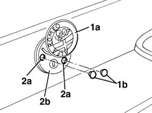
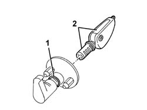

7055A80 rear ornament - r r
- Path
- Procedures > 70 FITTINGS > 7055 MOULDING AND PROTECTION > 7055A exterior mouldings > 7055A80 rear ornament - r r
- Kind
- repair procedure (removal / refitting; the operation number is the code)
- Applies to
- all engines; all production periods
- Interactive page
- https://sloeber94.github.io/elrnDB-a147/en/#/3025902
Applies to: all engines; all production periods
 Removing
Removing
 Refitting
Refitting1. Turn crest (1a) and prise out both plugs (1b) protecting the retaining bolts.
2. Use a drift to unscrew both self-tapping screws (2a) securing crest (2b) and remove.

Applies to: all engines; all production periods
1. Disengage the lock barrel retaining clip.
2. Insert the key in the lock barrel and remove.

Applies to: all engines; all production periods
Refitting
RemovingCheck that the lock barrel and the crest are not damaged.
Fit the retaining spring into its seat.
Fit the lock barrel into its seat until the groove engages with the retaining clips.
Fit the crest assembly and secure using two new self-tapping screws.
Fit the protective caps for the bolts.
Test the lock barrel to ensure it works properly.